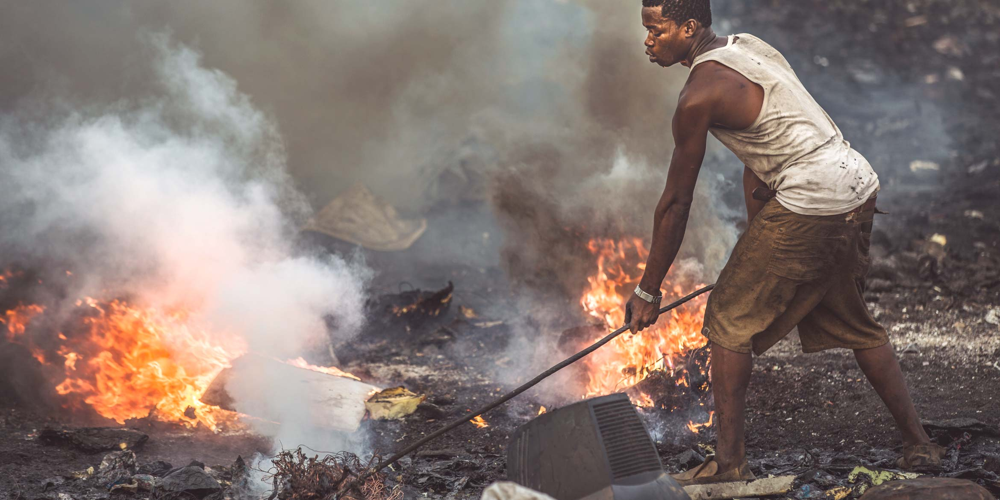
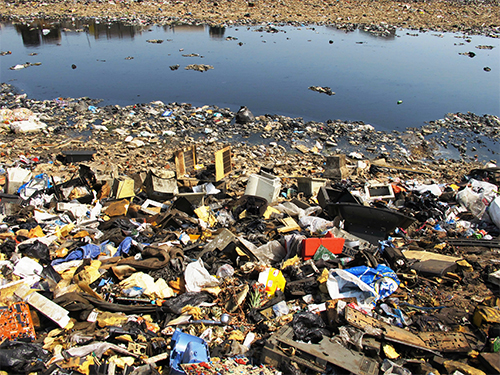

Use the navigation bar on top to learn more about harmful effects of e-waste
On Air
1. Contamination in the air occurs when e-waste is informally disposed by dismantling, shredding or melting the materials, releasing dust particles or toxins, such as dioxins, into the environment that cause air pollution and damage respiratory health.
2. Chronic diseases and cancers are at a higher risk to occur when burning e-waste because it also releases fine particles, which can travel thousands of miles, creating numerous negative health risks to humans and animals.
3.Higher value materials, such as gold and silver, are often removed from highly integrated electronics by using acids, desoldering, and other chemicals, which also release fumes in areas where recycling is not regulated properly.
On Soil
1. When improper disposal of e-waste in regular landfills or in places where it is dumped illegally, both heavy metals and flame retardants can seep directly from the e-waste into the soil, causing contamination of underlying groundwater or contamination of crops that may be planted near by or in the area in the future.
2. When the soil is contaminated by heavy metals, the crops become vulnerable to absorbing these toxins, which can cause many illnesses and doesn’t allow the farmland to be as productive as possible.
3. The amount of soil contaminated depends on a range of factors including temperature, soil type, pH levels and soil composition.

On Water
1. After soil contamination, heavy metals from e-waste, such as mercury, lithium, lead and barium, then leak through the earth even further to reach groundwater. When these heavy metals reach groundwater, they eventually make their way into ponds, streams, rivers and lakes.
2. Through these pathways, acidification and toxification are created in the water, which is unsafe for animals, plants and communities even if they are miles away from a recycling site.
3. Acidification can kill marine and freshwater organisms, disturb biodiversity and harm ecosystems. If acidification is present in water supplies, it can damage ecosystems to the point where recovery is questionable, if not impossible.

On Humans
1. Electronic waste contains toxic components that are dangerous to human health, such as mercury, lead, cadmium, polybrominated flame retardants, barium and lithium.
2. The negative health effects of these toxins on humans include brain, heart, liver, kidney and skeletal system damage. It can also considerably affect the nervous and reproductive systems of the human body, leading to disease and birth defects.